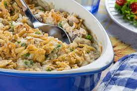

Tuna Casserole

Description
This tuna casserole is great for a quick meal with only a few ingredients. You can add different things to the recipe like vegetables or noodles instead of rice. The toasty crust on top finishes this recipe off perfectly which can be done with breadcrumbs or bread that is broken up.
Ingredients
- 1 x 425g can of Tuna In Brine
- 1 x 410g Condensed Soup Can Cream Of Celery
- 1 cup of White Rice
- Slices of Bread (To break up and cover)
Steps
- Preheat oven to 180C.
- Place a cup of white rice into a saucepan, with enough water to cover the rice.
- Cook the rice.
- Open can of tuna and drain the brine from the can, place the tuna into a medium to large size bowl.
- Open the can of condensed cream of celery soup, place the soup into the bowl that contains the tuna.
- Once the rice is cooked, drain any excess water and place the rice into the bowl of tuna and cream of celery soup.
- Mix the ingredients together until they are all well mixed and you can't see any large chunks of tuna or rice that are still together.
- Place the mixed ingredients into a casserole dish and even out the mixture in the casserole dish.
- Take your slices of bread and break them a part and place the little pieces of bread on top of the mixture.
- Place the dish under the grill to give the bread a light toast.
- Place in the oven and cook for 30-45 minutes or until the toast is nice and brown.